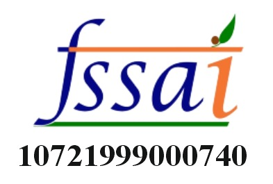
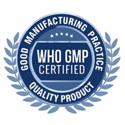
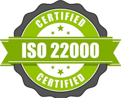
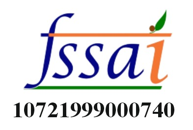
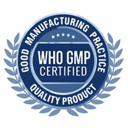
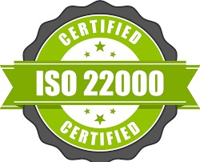

Milk Thistle:
Клинически проверенная поддержка печени
Sacred Leaves Milk Thistle – это клинически подтвержденное гепатопротекторное растение, богатое силимарином, известным своими мощными свойствами поддержки печени. Оно способствует детоксикации печени, регенерации клеток, выработке желчи и укреплению антиоксидантной защиты, помогая снизить окислительный стресс и поддерживать метаболический баланс. Эта натуральная добавка широко признана за свою способность защищать клетки печени от токсинов и поддерживать общее здоровье печени.
ККлючевые преимущества:
✅ Поддерживает детоксикацию печени и регенерацию клеток
✅ Улучшает выработку желчи и метаболический баланс
✅ Обеспечивает мощную антиоксидантную защиту
Возраст применения:
Подходит для взрослых от 18 лет и старше.
🚫 Не содержит сои и глютена
Рекомендации по применению:
Принимать 1 капсулу в день или по назначению врача
Предупреждения и меры предосторожности:
⚠ Если вы беременны, кормите грудью или принимаете какие-либо лекарства, проконсультируйтесь с врачом перед применением.
⚠ При возникновении побочных реакций прекратите прием и обратитесь к врачу.
⚠ Хранить в недоступном для детей месте.
Условия хранения:
Хранить в прохладном и сухом месте при температуре до 30°C. Беречь от прямого света, тепла и влаги.
🚫 Диетическая добавка – не является лекарственным средством
⚠ Данные заявления не были оценены Управлением по санитарному надзору за качеством пищевых продуктов и медикаментов.
⚠ Этот продукт не предназначен для диагностики, лечения, излечения или предотвращения каких-либо заболеваний.
Безопасность и качество
✅ Без глютена
✅ Без сахара
✅ Без ГМО
✅ Без лактозы
 




